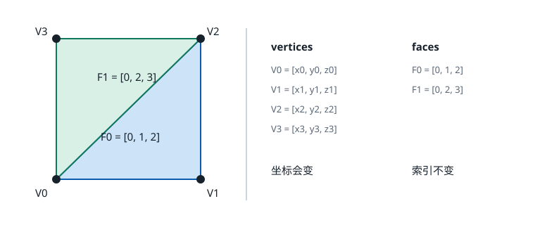
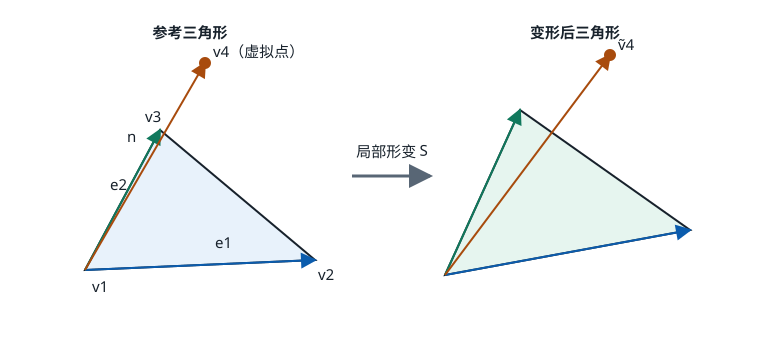
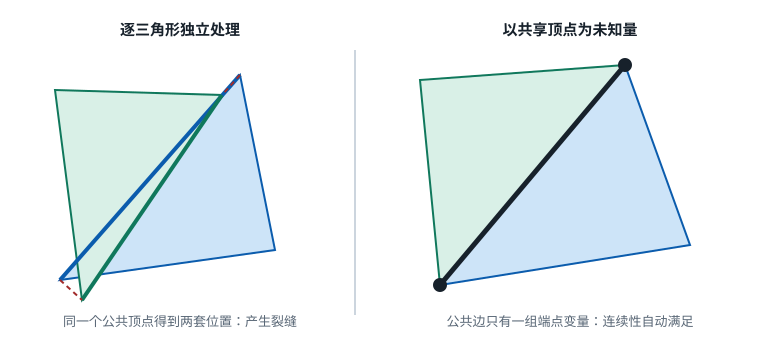

论文：
Deformation Transfer for Triangle Meshes
Robert W. Sumner, Jovan Popović, SIGGRAPH 2004（ACM Transactions on Graphics 23(3), 399–405）。
为什么读这篇论文 #
这篇论文是别人推荐给我的。作为一个刚接触 3D 的初学者，我最初有些疑惑：一篇 2004 年的论文，为什么到现在还值得读？
论文从一个非常直观的例子开始：已经有一匹奔跑的马，怎样让形状和拓扑都不同的骆驼做出相同的动作？

Figure 1：给定马和骆驼的参考网格，将马的七个变形姿势迁移到骆驼。
这个问题属于计算机图形学中的 geometry processing 和 character animation。如果迁移的是骨骼动作，通常可以在两套 skeleton 之间做 animation retargeting；但一个角色的形变并不全在骨骼里。肌肉的隆起、皮肤的挤压、布料的塌陷，甚至艺术家直接雕刻出来的形状，都很难用关节角度完整描述。
Sumner 和 Popović 的选择是暂时不管动画由什么控制器产生，只观察变形前后的 triangle mesh。他们把每个三角形如何旋转、缩放和剪切提取出来，再将这些局部变化交给另一个网格。这使同一套方法既能传递关节姿势，也能处理明显的非刚性形变。
今天回头看，这篇论文的重要之处不只是提出了一种具体算法，而是把问题拆成了三个后来反复出现的部分：怎样表示局部形变，怎样建立两个形状之间的 correspondence，以及怎样把局部变化重新拼成连续的整体。2021 年的 Deformation Transfer Survey 仍将它称为这一方向的 seminal work，并认为它是最早直接在不同 mesh 之间进行 retargeting 的方法。
这也是它适合入门的原因。沿着“马的动作怎样交给骆驼”这个问题，可以顺次遇到三角网格、局部坐标系、稀疏矩阵和最小二乘；这些并不是孤立的数学工具，而是在共同解决一个能看见结果的问题。
论文发表于 SIGGRAPH 2004，并收录在 ACM Transactions on Graphics。作者当时都在 MIT CSAIL： Robert W. Sumner 是博士生， Jovan Popović 是他的导师。Sumner 后来以 deformation gradient 为主线完成博士论文，之后加入 Disney Research，继续研究 animation、deformation 和数字内容创作工具；Popović 后来也进入 Adobe Research，并在 University of Washington 任 affiliate professor。换句话说，这项工作既来自图形学的学术研究，也一直贴近动画制作中真实存在的需求。
问题定义 #
用一个比例式可以概括 deformation transfer：
$$ S_{ref}:S_{def}=T_{ref}:T_{def}. $$
其中：
| 符号 | 含义 |
|---|---|
| \(S_{ref}\) | 源参考网格（source reference mesh），例如站立的马 |
| \(S_{def}\) | 源变形网格（source deformed mesh），例如奔跑的马 |
| \(T_{ref}\) | 目标参考网格（target reference mesh），例如站立的骆驼 |
| \(T_{def}\) | 待求的目标变形网格，即奔跑的骆驼 |
这里迁移的不是“某个顶点移动了多少厘米”，而是表面各个局部区域发生了怎样的旋转、缩放和剪切。绝对位移依赖模型的尺寸和空间位置，不能直接从马复制给骆驼；局部形变则具有更好的可迁移性。
算法还需要一个 correspondence map \(M\)，描述源三角形与目标三角形之间的对应关系。两个网格不必具有相同的顶点数、三角形数或拓扑，因此 \(M\) 允许一对多和多对一。
最终输出只有 \(T_{def}\) 的顶点坐标。目标网格的顶点数量、三角形索引和拓扑都不会改变。
三角网格与数据结构 #
三角网格通常由顶点数组和面索引数组组成：
vertices = [
[x0, y0, z0],
[x1, y1, z1],
...
]
faces = [
[0, 1, 2], // triangle F0 使用 V0、V1、V2
[0, 2, 3], // triangle F1 使用 V0、V2、V3
...
]

相邻三角形通过引用同一个顶点编号保持连接。这个简单的事实，稍后会替我们自动满足网格的连续性约束。
输入数据可以整理成下面几项：
| 数据 | 内容 |
|---|---|
| \(S_{ref}\) | 源网格的顶点 \(V_s\) 与面 \(F_s\) |
| \(S_{def}\) | 变形后的源顶点；与 \(S_{ref}\) 共用 \(F_s\) |
| \(T_{ref}\) | 目标网格的顶点 \(V_t\) 与面 \(F_t\) |
| \(M\) | \((sourceFaceId,targetFaceId)\) 组成的对应集合 |
| \(T_{def}\) | 待求的目标顶点；继续使用 \(F_t\) |
整套方法分为三步：先从 \(S_{ref}\rightarrow S_{def}\) 提取源三角形的局部变换；再通过 \(M\) 把这些变换分配给目标三角形；最后解一个全局最小二乘问题，使所有局部要求在同一张连续网格上尽量成立。
用局部仿射变换描述形变 #
设一个源三角形变形前的顶点为 \(v_1,v_2,v_3\)，变形后为 \(\tilde v_1,\tilde v_2,\tilde v_3\)。我们希望求出它的局部仿射变换（affine transformation）：
$$ S_sv_i+d_s=\tilde v_i. $$
\(S_s\) 是 \(3\times3\) 的线性部分，记录旋转、缩放和剪切；\(d_s\) 是平移。
为什么需要第四个点 #
三角形的三个顶点共面，只能确定平面内的变化，无法唯一确定法线方向上的变换。论文沿法线添加一个辅助点：
$$ v_4=v_1+ \frac{(v_2-v_1)\times(v_3-v_1)} {\sqrt{\left|(v_2-v_1)\times(v_3-v_1)\right|}}. \tag{1} $$
这里的分母是叉积长度的平方根，而不是常见的单位法线归一化。这样构造出的第三条轴，其尺度与三角形边长大致相当，三条基向量的量级不会相差过大。

两条边张成三角形平面，辅助点补上法线方向，从而得到完整的三维局部基。
对四个点写出仿射变换：
$$ S_sv_i+d_s=\tilde v_i,\qquad i=1,2,3,4. \tag{2} $$
分别用第 2、3、4 个方程减去第 1 个方程，平移项被消去：
$$ \begin{aligned} S_s(v_2-v_1)&=\tilde v_2-\tilde v_1,\ S_s(v_3-v_1)&=\tilde v_3-\tilde v_1,\ S_s(v_4-v_1)&=\tilde v_4-\tilde v_1. \end{aligned} $$
将三组向量按列组成局部基矩阵：
$$ B_s=[v_2-v_1\quad v_3-v_1\quad v_4-v_1], $$
$$ \tilde B_s=[\tilde v_2-\tilde v_1\quad \tilde v_3-\tilde v_1\quad \tilde v_4-\tilde v_1]. \tag{3} $$
于是有 \(S_sB_s=\tilde B_s\)，进而得到：
$$ \boxed{S_s=\tilde B_sB_s^{-1}}. \tag{4} $$
可以把 \(B_s^{-1}\) 理解为从原来的局部坐标系退出，再由 \(\tilde B_s\) 进入变形后的局部坐标系。这个矩阵有时也被称作 deformation gradient。完整变换中的平移可以通过
$$ d_s=\tilde v_1-S_sv_1 $$
恢复，但 deformation transfer 真正需要迁移的是 \(S_s\)，而不是依赖世界坐标的 \(d_s\)。
从局部变换到连续网格 #
对应集合写作：
$$ M={(s_1,t_1),(s_2,t_2),\ldots}. \tag{5} $$
每个 \((s,t)\) 表示目标三角形 \(t\) 应当模仿源三角形 \(s\) 的局部变换。若一个目标三角形对应多个源三角形，求解器会在这些要求之间寻找最小误差的折中。
直接把 \(S_s\) 分别应用到目标三角形并不可行。线性部分能确定三角形的朝向和尺度，却不知道它应该位于哪里；如果连源网格的平移也一起复制，又会把源模型的尺寸和世界坐标带进来。两种做法都会让相邻三角形错位甚至裂开。

Figure 2。A：只有线性变换时，三角形的位置彼此不协调；B：复制源网格的平移会使网格断裂；C：全局优化得到连续结果。
设目标三角形 \(j\) 和 \(k\) 共享顶点 \(v_i\)，它们对这个顶点的变换结果必须一致：
$$ T_jv_i+d_j=T_kv_i+d_k, \qquad \forall i,;j,k\in p(v_i). \tag{6} $$
因此可以先把问题写成：
$$ \begin{aligned} \min_{T_t,d_t}\quad& \sum_{(s,t)\in M}\left|S_s-T_t\right|_F^2\ \text{subject to}\quad& T_jv_i+d_j=T_kv_i+d_k. \end{aligned} \tag{7} $$
目标函数比较的是源和目标的线性变换。Frobenius norm \(\|\cdot\|_F\) 等价于把两个 \(3\times3\) 矩阵对应元素的差平方后求和。约束则负责把独立的局部变换重新拼成一张连续表面。
Vertex formulation #
如果直接以每个三角形的 \(T_t,d_t\) 为未知量，还需要显式维护大量连续性约束。论文随后换了一个更适合实现的视角：直接求目标网格变形后的顶点坐标。
两个相邻三角形引用的是同一个顶点编号，求解向量中自然也只有一份 \(\tilde v_i\)。因此它们不可能给公共顶点算出两个不同的位置，式（6）的连续性条件被网格的数据结构自动满足了。

对目标三角形 \(t\)，参考姿势下的局部基 \(B_t\) 是已知量。它在变形后的局部变换可写为：
$$ T_t=\tilde B_tB_t^{-1}, \qquad \tilde B_t=[\tilde v_2-\tilde v_1\quad \tilde v_3-\tilde v_1\quad \tilde v_{4,t}-\tilde v_1]. $$
将其代回式（7），便得到以顶点位置为未知量的 least-squares problem：
$$ \min_{\tilde v_1,\ldots,\tilde v_n} \sum_{(s,t)\in M} \left|S_s-\tilde B_tB_t^{-1}\right|_F^2. \tag{8} $$
这个问题为什么仍是线性的 #
\(B_t^{-1}\) 完全由目标参考网格决定，是常量。假设它的第一列为 \([a,d,g]^T\)，那么 \(T_t\) 的第一列为：
$$ \begin{aligned} &a(\tilde v_2-\tilde v_1)+d(\tilde v_3-\tilde v_1)+g(\tilde v_{4,t}-\tilde v_1)\ =;&a\tilde v_2+d\tilde v_3+g\tilde v_{4,t}-(a+d+g)\tilde v_1. \end{aligned} $$
所有系数都已知，未知顶点之间没有乘法、除法或开方，所以 \(T_t\) 的每个元素都是顶点坐标的线性组合。
有一点需要特别注意：变形后的辅助点 \(\tilde v_{4,t}\) 不能再通过未知顶点的叉积计算，否则会引入非线性。论文为每个目标三角形增加一个独立的辅助未知点。若目标网格有 \(n\) 个真实顶点和 \(m\) 个三角形，那么每个坐标方向共有 \(n+m\) 个未知数。求解结束后，只保留前 \(n\) 个真实顶点，辅助点全部丢弃。
稀疏最小二乘 #
将所有 correspondence 产生的矩阵元素方程叠起来，可以写成标准形式：
$$ \min_{\tilde x}\left|c-A\tilde x\right|_2^2. \tag{9} $$
- \(\tilde x\)：目标网格的真实顶点和辅助顶点在某一个坐标方向上的未知值；
- \(A\)：由目标参考网格、correspondence 和位置约束决定的系数矩阵；
- \(c\)：按照 correspondence 排列的源局部变换元素；
- \(A\tilde x\)：当前目标顶点产生的局部变换。
通常无法让所有局部要求同时精确成立，因此求解的是误差平方和最小的结果。对
$$ E(\tilde x)=(c-A\tilde x)^T(c-A\tilde x) $$
求导并令梯度为零：
$$ \nabla E(\tilde x)=2A^T(A\tilde x-c)=0, $$
得到 normal equations：
$$ \boxed{A^TA\tilde x=A^Tc}. \tag{10} $$
\(x,y,z\) 三个坐标方向共用同一个 \(A\)，只有右侧向量不同，因此可以独立求解三次。
矩阵 \(A\) 非常稀疏。一个三角形的局部变换只与它自己的三个真实顶点和一个辅助点有关，不会直接涉及网格另一端的顶点。即使一行有数万列，非零项也只有很少几个。
消除平移自由度 #
只比较局部变换时，整个输出网格可以任意平移，目标函数的值却不变。为消除这个 null space，至少要固定一个完整的三维顶点。
论文采用 hard constraint：将已知顶点从未知向量中移除，并把相应项移到右侧。例如：
$$ 2\tilde x_3-\tilde x_{10}=5. $$
若固定 \(\tilde x_{10}=1\)，方程就变为 \(2\tilde x_3=6\)。固定值也可以是脚底位置、门把手位置或 motion capture 提供的目标位置，不一定要等于 reference pose 中的坐标。
为什么分解一次就够了 #
令
$$ H=A^TA, \qquad b=A^Tc, \qquad H\tilde x=b. $$
当目标参考网格、correspondence 和约束的顶点集合不变时，\(H\) 始终不变。新的源姿势只会改变 \(c\)，继而改变 \(b\)。因此可以预先对 \(H\) 做一次 sparse LU factorization：
$$ H=LU. $$
之后每个新姿势只需要前向代入和回代（back substitution）。若约束的顶点编号不变而目标位置逐帧更新，也只会改变右侧；只有启用或关闭一组约束时，矩阵结构才会改变。
如何建立 correspondence #
前面的推导都假设 correspondence map \(M\) 已经存在。实际中，源和目标的网格密度与拓扑可能完全不同，不能按顶点编号直接配对。论文的办法是先将源参考网格非刚性配准到目标参考网格，再在两个已经贴近的表面之间寻找三角形对应。
用户先提供少量语义明确的 vertex markers，例如鼻尖对鼻尖、膝盖对膝盖。设源参考顶点为 \(u_i\)，配准后的临时顶点为 \(\hat u_i\)，marker 在目标表面的位置为 \(m_k\)，则 marker 是 hard constraint：
$$ \hat u_{a_k}=m_k. $$
配准阶段为每个源三角形引入局部变换 \(R_i\)。这里改用 \(R_i\)，是为了避免和真正执行 deformation transfer 时的 \(S_s\) 混淆。
Registration energy #
第一项要求相邻三角形的局部变换尽量接近：
$$ E_S=\sum_i\sum_{j\in adj(i)}\left|R_i-R_j\right|_F^2. \tag{11} $$
它平滑的是 deformation field，而不是网格表面本身。如果所有三角形经历同一个 rigid transformation，\(E_S\) 为零。
第二项让局部变换在没有其他证据时靠近 identity：
$$ E_I=\sum_i\left|R_i-I\right|_F^2. \tag{12} $$
第三项是 closest valid point term：
$$ E_C=\sum_i\left|\hat u_i-c_i\right|^2. \tag{13} $$
\(c_i\) 是目标表面上距离 \(\hat u_i\) 最近的有效点，可以落在三角形内部。为减少嘴唇上下表面或模型正反面之间的错误匹配，源顶点法线与候选目标三角形法线的夹角必须小于 \(90^\circ\)。
总能量为：
$$ \begin{aligned} \min\quad&E=w_SE_S+w_IE_I+w_CE_C\ \text{subject to}\quad&\hat u_{a_k}=m_k. \end{aligned} \tag{14} $$
求解分成两个阶段：
- 粗配准。 设 \(w_S=1.0\)、\(w_I=0.001\)、\(w_C=0\)，先依靠 markers、smoothness 和 identity term 将源网格拉到目标网格附近。
- Non-rigid ICP。 反复更新 closest valid points 并重新求解，将 \(w_C\) 分四步从 1 提高到 5000，让两个表面逐渐贴合。

Figure 4。A：目标骆驼；B：源模型马；C：由 markers、smoothness 和 identity term 得到的粗配准；D：加入 closest valid point term 后的结果。
配准完成后，算法比较临时源三角形与目标三角形的中心点。只有中心距离低于阈值且法线夹角小于 \(90^\circ\) 的三角形才视为兼容。最近邻搜索从两个方向各做一次：
for each registered source triangle s:
t = closest compatible target triangle
M.add((s, t))
for each target triangle t:
s = closest compatible registered source triangle
M.add((s, t))
双向搜索自然会产生一对多和多对一关系，因此能够处理不同分辨率的网格。某些目标区域也可以没有源 correspondence，例如人脸扫描只包含正脸，而数字角色还有后脑与颈部。对于这些区域，可以额外加入接近 identity transformation 的 regularization。
这套自动 correspondence 并不等于自动理解模型语义。最近点只有在粗略语义对齐后才可靠；如果 marker 太少，或两个角色的结构差异太大，registration 仍可能得到错误结果。
实现框架 #
将预处理和逐姿势计算分开，整体流程如下：
// 一次性：建立 correspondence
M = build_correspondence(source_ref, target_ref, marker_pairs)
// 一次性：构造并分解 target 的线性系统
for each target face t:
B_inv[t] = inverse(local_basis(target_ref, t))
A = assemble_sparse_matrix(target_ref, B_inv, M, constraints)
H = transpose(A) * A
factor = sparse_LU(H)
// 每个 source pose
for each source face s:
B_ref = local_basis(source_ref, s)
B_def = local_basis(source_pose, s)
S[s] = B_def * inverse(B_ref)
c = stack_source_transforms(S, M, constraints)
b = transpose(A) * c
x = solve_with_LU(factor, b.x)
y = solve_with_LU(factor, b.y)
z = solve_with_LU(factor, b.z)
// 只写回真实顶点，triangle auxiliary vertices 不属于输出网格
target_pose.vertices = combine(x[0:n], y[0:n], z[0:n])
target_pose.faces = target_ref.faces
实现时还有几个容易踩坑的地方：
- 退化或接近退化的三角形会使 \(B\) 不可逆，需要预先检测面积；
- 源参考网格与源姿势必须拥有相同的拓扑和顶点编号；
- 每个目标三角形都有自己独立的 auxiliary vertex，不能在相邻三角形之间共享；
- 至少固定一个三维顶点，否则系统存在整体平移的 null space；
- 没有源 correspondence 的区域需要 identity regularization；
- 实际的 sparse LU 通常还包含 permutation，以改善数值稳定性并减少 fill-in。
实验结果 #
论文展示了四组主要实验：horse 到 camel、cat 到 lion、真人 face scan 到数字角色，以及 horse 到 flamingo。输入形变既包括关节驱动的姿势，也包括明显的非刚性塌陷。

Figure 6：源模型马像布料一样塌陷，目标骆驼也获得了相应的局部折叠与压缩。这说明方法并不依赖 skeleton。

Figure 7：将真人 face scan 的表情迁移到数字角色。源网格只覆盖面部正面，目标网格的其余区域通过 regularization 保持稳定。

Figure 8：horse 到 flamingo 的实验刻意挑战了 correspondence 的语义边界。
论文在 3.0 GHz Pentium IV 上报告了以下耗时。LU factorization 只做一次，之后每个新姿势只需 back substitution：
| 组合 | Marker 数 | LU factorization | 每姿势 back substitution |
|---|---|---|---|
| Horse → Camel | 65 | 1.559 s | 0.293 s |
| Cat → Lion | 77 | 0.299 s | 0.057 s |
| Human face → Digital head | 42 | 1.252 s | 0.298 s |
| Horse → Flamingo | 73 | 1.495 s | 0.406 s |
作者还测试了约 40 万个三角形的目标网格：LU factorization 约需 95 秒，每个姿势的 back substitution 约需 6.5 秒。此时主要瓶颈已经变成内存和磁盘交换，论文建议对超大网格考虑 multigrid 一类的求解器。
连续动画仍然是逐帧求解。为了维持脚部位置，作者记录源模型脚部顶点的轨迹，按目标模型的尺寸缩放后作为 position constraints。由于输入动画、约束和线性求解都随时间连续，输出通常也会连续；不过目标函数中没有 temporal term，因此方法本身并不严格保证无抖动。
局限 #
这套方法很通用，但它的边界也很清楚。
- 依赖合理的语义对应。 猫与狮子、马与骆驼容易建立 correspondence；马与火烈鸟之间就有明显歧义。
- 只迁移几何结果。 Skeleton、skin weights、blendshape controls、muscle parameters 和 animation controllers 都不会被迁移。
- 缺少细粒度的编辑控制。 主要控制手段是 correspondence 和 position constraints，不能直接表达“这个关节只传递 50%”。
- 没有显式的时间模型。 动画按帧独立求解，平滑性来自连续输入而不是 temporal optimization。
- 直接求解器受内存限制。 大规模系统中的 LU fill-in 会迅速增加存储和计算成本。
论文的实验说明，同一个局部变换框架能够处理不同拓扑、不同变形来源和多类角色，并且在当时的硬件上已经足够高效。不过论文主要依赖视觉案例，没有提供大规模定量误差、用户研究或解剖合理性指标。它证明了这个框架具有很强的表达力，但不意味着任意两个模型之间都能自动得到正确结果。
这条思路后来去了哪里 #
二十多年后再看，这个问题并没有因为一个线性系统就彻底解决。所谓“局部形变已经可以比较稳定地迁移”，指的是一些条件受控的工作流：同拓扑模型可以直接传递 blendshape vertex deltas；不同拓扑但形态相近的模型，可以先对 neutral mesh 做 template fitting 或 non-rigid registration，固定 dense correspondence 后，再用本文的 deformation gradient、Poisson reconstruction 或 ARAP 一类方法迁移整套形变。影视和游戏管线还会把这些结果与 skeleton、skinning、contact constraints 和 corrective blendshapes 结合，并由技术美术检查极端姿势。
因此，稳定的通常不是某一个能够处理任意模型的算法，而是“统一拓扑或高质量配准 + 几何形变迁移 + 专用约束 + 人工修正”这条完整管线。只看其中的几何求解，技术已经很成熟；真正棘手的仍是怎样自动找到可靠的语义对应、怎样处理人体和衣物的复杂运动，以及怎样让结果既能编辑又能实时渲染。研究也因此从单纯的 mesh-to-mesh transfer，逐渐分流到几条相互交织的路线。
局部变换没有消失 #
2005 年的 Mesh-Based Inverse Kinematics 延续了同一套 deformation gradient 表示，但任务从“把一个模型的形变传给另一个模型”变成了“移动少数顶点，生成符合示例的完整姿势”。它很适合接在本文后面读，因为许多符号和思想是一脉相承的。
2007 年出现了两项影响很大的工作。 As-Rigid-As-Possible Surface Modeling 将“局部尽量保持刚性”写入优化目标，成为 mesh editing 中非常经典的能量模型；Sumner 等人的 Embedded Deformation for Shape Manipulation 则不再为每个 triangle 保存变换，而是用较稀疏的 deformation graph 控制周围空间。后者把形变复杂度与原始模型分辨率分开，后来广泛影响了 non-rigid registration、动态重建和跟踪系统。
这些方法都没有直接逐点指定最终位置，而是先描述“局部应该怎样变”，再通过邻域一致性和全局优化恢复整个形状。变化的只是局部变换放在哪里、需要满足什么性质，以及最后使用线性还是非线性方法求解。
最难的仍然是“哪里对应哪里” #
原论文最依赖人工的部分，是用户需要放置一组 markers 来启动 correspondence。后续研究不断尝试减少这部分工作。2012 年的 Functional Maps 不直接搜索 point-to-point map，而是在两个形状的函数空间之间建立映射。它提供了一种紧凑、便于优化的 correspondence representation，并成为 non-rigid shape matching 的重要基础。
correspondence 和 deformation transfer 是两个相邻但不同的问题：前者回答“哪里对应哪里”，后者回答“知道对应以后，形变怎样过去”。原论文把这两步都做了，但后来的研究越来越清楚地表明，许多失败案例并不是求解器算错了，而是系统从一开始就对应错了位置。
神经网络接过了部分工作 #
随着人体数据集、参数化模型和深度学习的发展，后来的方法开始从大量样本中学习 pose 与 identity 的分离。比如 CVPR 2020 的 Neural Pose Transfer，目标仍是把一个 mesh 的姿势迁移给另一个 mesh，但它尝试用神经网络摆脱手工 point-wise correspondence。
这类方法能减少人工对应，并在特定数据分布上获得很好的效果；代价是需要训练数据，而且泛化范围受数据集影响。相比之下，2004 年的方法不学习某个角色类别，它依赖的是明确的几何对应和优化模型。两者并不是简单的“新方法淘汰旧方法”，而是数据先验、人工控制和泛化能力之间不同的取舍。
2021 年的 Deformation Transfer Survey 对这段发展做了系统梳理。综述特别指出，deformation transfer 虽然能绕开 rig 的制作与映射，但由于 correspondence、artifact control 和生产稳定性等问题，它还没有取代成熟的 skeleton-based pipeline。这也解释了为什么这篇论文在研究上很重要，却未必是动画软件中最常见的按钮。
经典几何方法进入可学习框架 #
2022 年的 Neural Jacobian Fields 是与本文关系最直接的现代工作之一。它让神经网络在 mesh 上预测一个 matrix field，将这些矩阵投影成候选 Jacobian，再通过可微的 Poisson solve 恢复顶点位置。论文将 deformation transfer、registration、morphing、elastic deformation 和 UV parameterization 都放进了同一套框架，而且允许训练数据拥有不同的 triangulation。
如果刚读完本文，会发现它的骨架非常熟悉：
2004：从 source mesh 取得每个 triangle 的局部矩阵
→ sparse least-squares solve
→ target vertices
2022：由 neural network 预测连续的 Jacobian field
→ differentiable Poisson solve
→ output vertices
改变的是“局部矩阵从哪里来”：2004 年由 source deformation 和 correspondence 明确计算，2022 年则由网络根据数据学习；没有改变的是“局部微分量不一定能彼此兼容，仍需全局积分恢复形状”。这说明 deformation gradient 并没有随着 deep learning 过时，反而成为了连接神经网络与经典几何求解器的中间表示。
当输入不再是另一张 mesh #
SIGGRAPH 2023 的 TextDeformer 把这条路线又向前推了一步：输入不再是另一张 source mesh，而是一段文字，例如把某个动物变得更像“giraffe”或“alligator”。CLIP、DINO 和 differentiable rendering 提供语义与图像梯度，Jacobian representation 则负责把噪声很大的局部更新变成连贯的全局 mesh deformation。
它和 2004 年论文的任务已经不同，却保留了同一个关键经验：直接逐顶点优化很容易得到局部噪声和破碎结果；在 gradient/Jacobian domain 中表达变化，再进行全局重建，通常更容易维持形状的整体一致性。
与 dynamic NeRF 和 3D Gaussian Splatting 汇合 #
2020—2022 年前后的 dynamic NeRF，通常把一个会动的对象拆成 canonical radiance field 与 deformation field。这个框架能够从图像中重建动态外观，但 NeRF 依赖沿相机光线进行大量采样，训练和渲染成本较高。
2023 年 3D Gaussian Splatting 流行以后，动态场景和数字人研究很快开始用一组显式 3D Gaussians 代替纯 MLP radiance field。形变问题仍然存在，只是被迁移的对象从 triangle 或 volume sample 变成了 Gaussian primitives 的位置、旋转、尺度和外观属性。
CVPR 2024 的 4D Gaussian Splatting 面向一般动态场景，用 Gaussian deformation field 建模随时间变化的内容，并把实时渲染作为主要目标。同年的 GaussianAvatar 与 3DGS-Avatar 则针对可驱动人体：从单目视频恢复穿衣人物，并让重建结果能够跟随新姿势实时运动。
这类工作与本文的联系不再是“复制同一条公式”，而是共享问题结构：需要一个 canonical representation，需要把不同姿势对应到统一空间，也需要约束局部变换在空间和时间上保持一致。区别在于输出已经不只是一张 mesh，而是同时携带几何和外观、能够快速渲染的动态表示。
更少的输入，更弱的模板依赖 #
到 2025 年，研究重点进一步转向“少量甚至单张输入也能生成可驱动角色”。CVPR 2025 的 AniGS 从单张人物图像出发，先借助 video diffusion model 生成 canonical pose 的多视图信息，再用 4D Gaussian Splatting 构建可实时驱动的 avatar。这时生成模型开始承担过去由多相机采集、人工 correspondence 或完整扫描提供的先验。
另一项工作 TAGA 把目标写在了标题里：template-free animatable Gaussian articulated model。传统人体 avatar 往往严重依赖 SMPL 一类参数化人体模板；新的方法开始尝试从观测中自行发现可动结构和形变，而不是预先规定一套人体拓扑。
不过，“template-free”并不意味着 correspondence 消失了。更准确地说，correspondence 从用户显式标注的 triangle pairs，变成了训练过程中隐式学习的 canonical alignment、skinning field、motion feature 或 Gaussian association。问题仍然存在，只是被包进了模型内部。
到 2026 年，重点变成“怎样真正用起来” #
截至 2026 年，dynamic neural representation 已经证明可以重建和驱动复杂运动，接下来的难点更偏向实际使用：
- 时序稳定。 快速运动、遮挡、头发和衣物仍容易出现漂移、闪烁或错误 correspondence；
- 训练和存储成本。 4D 表示需要保存大量随时间变化的 Gaussian 或网络参数，压缩与稀疏化成为独立问题；
- 更少的采集条件。 研究正在从多机位视频走向普通单目视频、稀疏帧乃至单张图片；
- 可编辑与可复用。 仅能重放训练视频还不够，角色还需要接受新动作、表情、视角、光照甚至文字指令；
- 更一般的对象。 人体可以依赖 skeleton 和 SMPL，宽松衣物、动物与一般非刚体则缺少同样可靠的模板。
例如 AAAI 2026 的 Sparse4DGS 开始专门处理 sparse-frame dynamic reconstruction，并对 Gaussian deformation 加入与纹理相关的 regularization；另一些工作重新引入 deformation graph，约束 canonical Gaussians 的跨帧运动。这形成了一个很有意思的回环：表示从 mesh 变成 NeRF、再变成 Gaussian，但 neighborhood consistency、canonical space 和 deformation regularization 又回到了 geometry processing 早已研究的问题上。
因此，如果把 2004—2026 的变化压缩成一句话，它并不是“deformation transfer 被 NeRF 取代，然后 NeRF 又被 Gaussian Splatting 取代”，而是：
局部形变与 correspondence 这两个几何问题一直存在；变化的是承载它们的表示，从 triangle mesh、deformation graph，发展到 neural field 和 3D Gaussians，而控制信号也从另一张 mesh 扩展到视频、骨骼、文字与生成模型。
如果想继续读下去 #
作为入门，我觉得不必一开始就追最新的论文。先看本文配套的 项目页面和视频，建立对 deformation transfer 的直观认识，再读 Mesh-Based Inverse Kinematics、 ARAP 和 Embedded Deformation，会更容易看出不同方法共享的几何基础。
之后可以按自己的兴趣分流。想了解 shape correspondence，可以读 Functional Maps；想看经典几何怎样与 deep learning 结合，可以读 Neural Jacobian Fields；对文本编辑感兴趣，可以看 TextDeformer；如果关注动态重建和数字人，则可以从 D-NeRF、 4D Gaussian Splatting 和 GaussianAvatar 继续往下看。
如果准备亲手实现，最好先假设 correspondence \(M\) 已知，只完成 deformation gradient 的提取和 sparse least-squares reconstruction。等这一段稳定以后，再加入 registration 和自动 correspondence，问题会清楚很多。
写在最后 #
读完这篇论文，我觉得最值得带走的并不是某个公式，而是作者看待形变的方式。他们没有把网格变形当作成千上万个顶点各自移动，而是先问：每一小块表面究竟发生了什么变化？
于是，局部用 affine transformation 描述“怎样变”，不同模型之间用 correspondence 说明“变到哪里”，最后再用 least-squares optimization 把这些局部要求拼回一张连续的网格。这个拆分让原本看起来很复杂的跨拓扑形变，落到了一个结构清晰、可以高效求解的问题上。
二十多年间，表示方法从 triangle mesh 发展到 deformation graph、neural field 和 3D Gaussians，输入也从另一张 mesh 扩展到了视频、骨骼和文字。但只要对象会发生非刚性运动，“如何描述局部变化”和“如何在不同状态之间找到对应”就仍然绕不开。理解这篇 2004 年的论文，也就不只是理解一个旧算法，而是在认识许多现代 3D 方法背后仍然存在的几何问题。
参考资料 #
- Robert W. Sumner and Jovan Popović. Deformation Transfer for Triangle Meshes. ACM Transactions on Graphics 23(3), 399–405, 2004.
- 作者项目页：论文、视频与实验数据
- Robert W. Sumner et al. Mesh-Based Inverse Kinematics. SIGGRAPH 2005.
- Olga Sorkine and Marc Alexa. As-Rigid-As-Possible Surface Modeling. SGP 2007.
- Robert W. Sumner, Johannes Schmid and Mark Pauly. Embedded Deformation for Shape Manipulation. SIGGRAPH 2007.
- Maks Ovsjanikov et al. Functional Maps: A Flexible Representation of Maps Between Shapes. SIGGRAPH 2012.
- Richard A. Roberts et al. Deformation Transfer Survey. Computers & Graphics 94, 2021.
- Jiashun Wang et al. Neural Pose Transfer by Spatially Adaptive Instance Normalization. CVPR 2020.
- Noam Aigerman et al. Neural Jacobian Fields: Learning Intrinsic Mappings of Arbitrary Meshes. SIGGRAPH 2022.
- William Gao et al. TextDeformer: Geometry Manipulation using Text Guidance. SIGGRAPH 2023.
- Guanjun Wu et al. 4D Gaussian Splatting for Real-Time Dynamic Scene Rendering. CVPR 2024.
- Liangxiao Hu et al. GaussianAvatar: Towards Realistic Human Avatar Modeling from a Single Video via Animatable 3D Gaussians. CVPR 2024.
- Lingteng Qiu et al. AniGS: Animatable Gaussian Avatar from a Single Image with Inconsistent Gaussian Reconstruction. CVPR 2025.
- Chenghao Shi et al. Sparse4DGS: 4D Gaussian Splatting for Sparse-Frame Dynamic Scene Reconstruction. AAAI 2026.
文中标注 Figure 编号的图片裁自原论文，仅用于学习与说明。